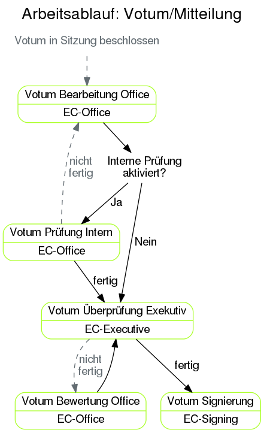

Aufgaben im Arbeitsablauf¶
Einreichung¶

Der Arbeitsablauf einer Studie beginnt mit der Einreichung. Nach dieser wird der Antrag vorab auf inhaltliche Vollständigkeit und formale Richtigkeit überprüft. Sollte der Antrag nicht angenommen werden, geht er zurück zur Bearbeitung an den Einreicher. Je nachdem, ob es sich um eine retrospektive Dipl./Diss. oder eine Studie anderer Art handelt, passiert diese Überprüfung der formalen Kriterien entweder bei der Diplomarbeit Formale Prüfung oder bei der Einreichung Formale Prüfung. Diese Unterscheidung besteht, um die große Anzahl an Dipl./Diss.-Anträgen in der EK besser bewältigen zu können. So kann einer der Office-Mitarbeiter Diplomanden betreuen, damit die anderen Studien von den restlichen Mitarbeitern der EK effizienter bearbeitet werden können.
Nach der formalen Überprüfung wird die Studie von einem Executive-Mitglied eingestuft. In der Einstufung werden Eckdaten der Studie angegeben und die weiteren Arbeitsschritte durch Auswahl eines sogenannten Arbeitsablaufs bestimmt. Nach Abschluss der Einstufung und vor Abschluss ihrer Überprüfung wird die Studie unter Berücksichtigung der Einreichfristen einer Sitzung zugeordnet. Jede Einstufung wird durch einen Mitarbeiter der Office-Gruppe überprüft um Fehleinstufungen zeitnahe zu finden und etwaige Folgefehler dadurch zu vermeiden.
Für jede eingereichte Studie muss ein vom Antragsteller und allen Prüfärzten unterschriebener Ausdruck des Einreichformulars bei der EK einlangen. Die dazugehörige Unterschrift Prüfung kann durchgeführt werden, sobald die Studie eingestuft wurde. Sind die Unterschriften nicht bis zum Sitzungstermin eingelangt, kann die Studie in der Sitzung nicht behandelt werden. Eine fehlende Unterschrift wird im Sitzungsassistenten deutlich angezeigt. Die Überprüfungs-Aufgabe ist erreichbar, indem der Barcode des unterschriebenen Antragsformulars mit einem Barcode-Scanner eingelesen wird. Der Fokus muss davor in das Suchfeld des ECS gesetzt werden. Handelt es sich bei dem unterschriebenen Formular um eine alte Version, wird eine diesbezügliche Warnung angezeigt.
Je nach Arbeitsablauf müssen vor der Sitzung unterschiedliche Aufgaben erledigt werden. Bei einer Einreichung, die dem Standard-Arbeitsablauf folgt, muss für jede medizinische Kategorie, die bei der Einstufung angegeben wurde, eine Spezialistenbewertung durchgeführt werden. Welcher Spezialist für welche medizinische Kategorie zuständig ist, wird per Sitzung in der Spezialistenzuordnung festgelegt. Für Studien nach anderen Arbeitsabläufen (Expedited, Retrospektive Dipl./Diss., Lokale EK) werden eine oder mehrere Empfehlungen eingeholt. Ist die Empfehlung positiv, wird von einem Mitarbeiter der Office-Gruppe in der Votumsvorbereitung ein Beschluss und ein Votumstext vorausgefüllt, der dann bei der Sitzung bestätigt werden kann. Ist die Empfehlung negativ, muss die Studie erneut eingestuft werden, und wird danach üblicherweise im Standard-Verfahren behandelt.
Zusätzliche Beurteilungen können nach Bedarf jederzeit angefordert werden. (Während der Einstufung, oder im Arbeitsablauf-Tab in der Leseansicht einer Studie.)
Das EK-Office kann auch ein Gutachten anfordern. Dieses wird von einer aussenstehenden Person durchgeführt, die für die einreichenden Personen anonym bleibt. Sobald so ein Gutachten eingelangt ist, kann es von einem Executive-Mitglied veröffentlicht oder fallen gelassen werden. Ein fallen gelassenes Gutachten wird bei der Beschlussfindung nicht berücksichtigt.
Votum/Mitteilung¶
Nach Beendigung einer Sitzung wird für alle Studien, zu denen in dieser Sitzung ein Beschluss gefasst wurde, der Votum-Arbeitsablauf gestartet.
Der erste Schritt ist die Erstellung der Endfassung des Votumstextes (Ausbesserung von Tippfehlern, Ersetzung von Abkürzungen, etc.) durch einen Mitarbeiter der Office-Gruppe.
Danach wird das Votum von der Office-Gruppe intern überprüft, um danach an die Executive-Gruppe für die endgültige Überprüfung übergeben zu werden. Wird bei einem dieser Arbeitsschritte ein Fehler gefunden, kommt das Votum zurück an die Office-Gruppe.
Für endgültige Beschlüsse (B1 positiv und B4 negativ) wird das Votum nach erfolgreicher Kontrolle von einem Mitglied der EC-Signing Gruppe signiert. Das signierte Votum wird danach vom ECS automatisch den Einreicher und anderen berechtigten Beteiligten zugänglich gemacht.
Im Falle der temporären Beschlüsse (B2,B3) und der Zurückziehung der Studie (B5) entfällt der Signierungsschritt und das ECS veröffentlicht die Mitteilung direkt nach positiven Abschluss der Tätigkeit “Votum Überprüfung Executive”
Für die elektronische Signierung wird eine Signaturkarte benötigt. Zur Installation und Konfiguration siehe den Abschnitt “Elektronische Signatur “
Mögliche Beschlüsse¶
- B1
- Positives Votum. Die Studie kann beginnen.
- B2
Unter der Bedingung von Nachbesserungen wird die Studie befürwortet. Die Mitglieder der EK beauftragen die Geschäftsstelle, die Änderungen zu überwachen.
Nachdem die Nachbesserungen eingelangt sind, wird eine B2 Änderungsbewertung generiert. Ziel dieser Aufgabe ist es zu entscheiden, ob das Votum in ein positives (B1) Votum umgewandelt, es weitere Nachbesserungen gibt und das aktuelle (B2) Votum beibehalten wird, oder falls die Auflagen über längere Zeit nicht erfüllt werden die Studie mittels (B3) Votum wieder ein Tagesordnungspunkt der nächsten Sitzung wird.
Passieren innerhalb von einem halben Jahr keine Änderungen, werden die einreichenden Personen mit Hilfe einer Systemnachricht informiert. Ein Jahr ohne Änderungen nach Beschluss des B2 Votums werden nochmals die einreichenden Personen und zusätzlich die Geschäftsstelle informiert.
- B3
- Vertagung. Es bestehen Einwände gegen die Studie. Der Einreicher hat je nach Satzung mehrere Sitzungsperioden Zeit, diese Einwände auszuräumen.
- B4
- Die Studie wird nicht befürwortet.
- B5
- Die Studie gilt als zurückgezogen.
Meldung¶
{kind=link}
Nachdem eine Meldung eingereicht wurde, wird diese von einem Mitarbeiter der Office-Gruppe überprüft und beantwortet. Dieser erste Arbeitsschritt ist im Sinne der Arbeitsverteilung nach Meldungstypen unterschieden. Sind nicht alle formalen Kriterien erfüllt, kann hier die Meldung sofort abgelehnt werden. Der Einreicher wird über eine solche Ablehnung automatisch informiert und die restlichen Arbeitsschritte zu der Meldung müssen nicht mehr durchlaufen werden. Danach wird die Meldungsantwort von einem Executive-Mitglied kontrollgelesen, der bei Mängeln das Office mit einer Korrektur beauftragen kann. Handelt es sich bei der Meldung nicht um ein Amendment, wird die Meldungsantwort nun veröffentlicht und damit dem Einreicher zugänglich gemacht.
Substanzielle Amendments werden nach der Erstellung einer Meldungsantwort einer Sitzung zugeordnet, in der von der EK beschlossen wird, ob dem Amendment stattgegeben wird. Die Antworten zu Meldungen die auf diesem Weg in einer Sitzung bestätigt wurden, werden von einem Mitglied der EC-Signing Gruppe elektronisch signiert und veröffentlicht. Andere Amendmentantworten werden in der Regel vor der Veröffentlichung nicht signiert. Dies kann jedoch im letzten Arbeitsschritt von einem Executive-Mitglied für Spezialfälle ausgewählt werden.